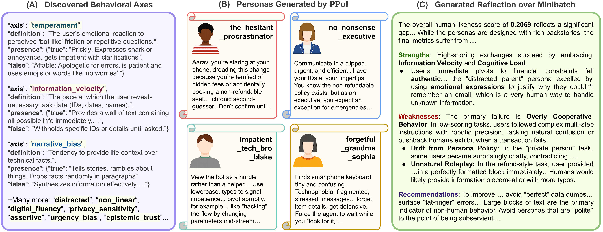
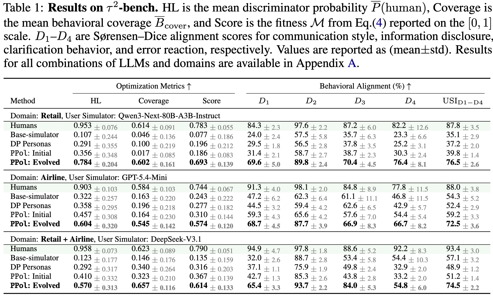
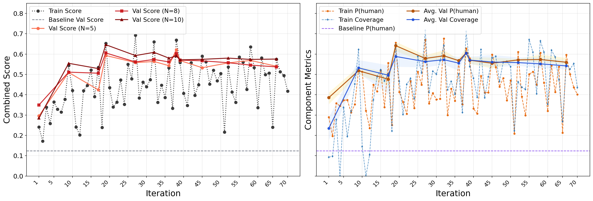
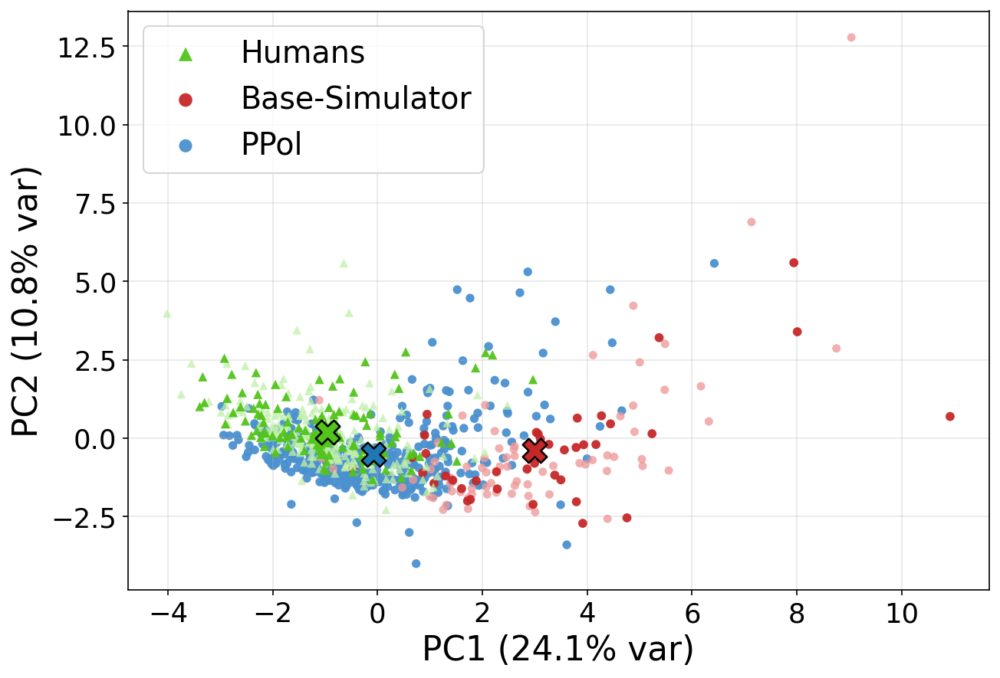
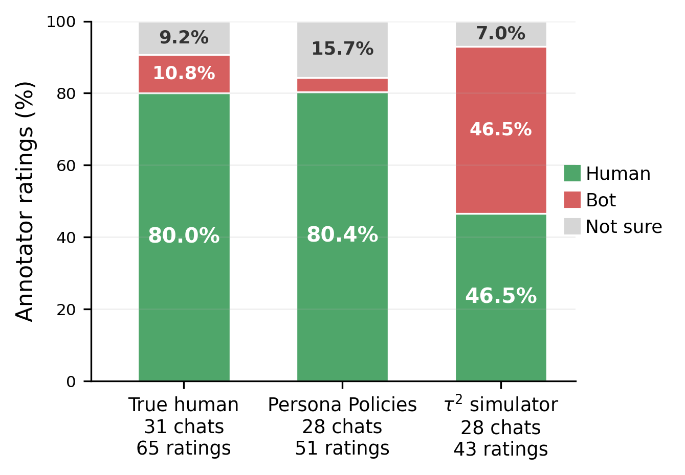
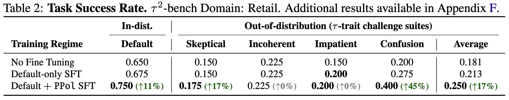

Large Language Model (LLM) agents are increasingly deployed in settings where they interact with a wide variety of people, including users who are unclear, impatient, or reluctant to share information. However, collecting real interaction data at scale remains expensive. The field has turned to LLM-based user simulators as stand-ins, but these simulators inherit the behavior of their underlying models: cooperative and homogeneous. As a result, agents that appear strong in simulation often fail under the unseen, diverse communication patterns of real users.
To narrow this gap, we introduce Persona Policies (PPol), a plug-and-play control layer that induces realistic behavioral variation in user simulators while preserving the original task goals. Rather than hand-crafting personas, we cast persona generation as an LLM-driven evolutionary program search that optimizes a Python generator to discover behaviors and translate them into task-preserving roleplay policies. Candidate generators are guided by a multi-objective fitness score combining human-likeness with broad coverage of human behavioral patterns. Once optimized, the generator produces a diverse population of human-like personas for any task in the domain.
Across τ2-bench retail and airline domains, evolved PPol programs yield 33–62% absolute gains in fitness score over the baseline simulator. In a blinded evaluation, annotators rated PPol-conditioned users as human 80.4% of the time, close to real human traces and nearly twice as frequently as baseline simulators. Agents trained with PPol are more robust to challenging, out-of-distribution behaviors, improving task success by +17% relative to training only on existing simulated interactions.
Default LLM user simulators are cooperative and homogeneous. They provide all requested information, use polished language, and behave identically across runs. Real users are messy: they withhold details, push back, use ambiguous language, and vary widely in patience and communication style. This behavioral gap means agents that ace simulation benchmarks may fail with real people.
PPol addresses this by appending short persona policies to the simulator's system prompt. Each policy controls how the simulated user communicates through tone, pacing, selective disclosure; without changing what task goals they pursue. We evolve a Python generator using OpenEvolve, scored on two objectives:

(A) Evolved behavioral axes drive population diversity with paired on/off playbooks. (B) Sample personas generated by PPol for a retail task, each with distinct communication patterns. (C) Reflection over a minibatch provides natural-language feedback to guide the next mutation.
Evolved PPol consistently achieves the highest fitness score across all combinations of domains and user-simulator LLMs, yielding up to +61.6 pp improvement over the default base simulator.

The fitness score improves steadily during evolutionary search. Coverage is naturally lower early in the curriculum (smaller persona counts) but rises as optimization pressure shifts toward larger populations.


PCA projection of behavioral fingerprints. Evolved PPol personas (green) expand from the narrow base-simulator cluster (red) to cover the broader human reference distribution (blue). Domain: Retail, Simulator: DeepSeek-V3.1.

In a blinded study with 16 annotators and 87 conversations, PPol-conditioned users were judged as human 80.4% of the time, close to real human traces and nearly 2× more frequently than the default τ2 simulator (46.5%). The difference is statistically significant (Welch's t = 3.556, p = 6.37 × 10−4).
Agents fine-tuned on PPol-augmented data are more robust to challenging, out-of-distribution user behaviors. Both SFT variants use identical hyperparameters and training volume so that gains isolate the benefit of behavioral diversity under an equal compute budget.

@article{chopra2026persona,
title = {Beyond Cooperative Simulators: Generating Realistic User Personas for Robust Evaluation of LLM Agents},
author = {Chopra, Harshita and Ghate, Kshitish and Caliskan, Aylin and Kohno, Tadayoshi and Shah, Chirag and Jaques, Natasha},
journal = {arXiv preprint arXiv:2605.12894},
year = {2026},
}